2. Les outils utilisés dans le document
Nous utiliserons dans ce document les outils suivants :
- un JDK Java 1.5
- le serveur web TOMCAT (http://tomcat.apache.org/),
- l'environnement de développement ECLIPSE (http://www.eclipse.org/) avec le plugin WTP (Web Tools Package).
- un navigateur (IE, NETSCAPE, MOZILLA Firefox, OPERA, ...).
Ce sont des outils gratuits. De façon générale, de nombreux outils libres peuvent être utilisés dans le développement Web :
http://www.borland.com/jbuilder/foundation/index.html | ||
http://www.eclipse.org/ | ||
http://struts.apache.org/ | ||
http://www.springframework.org | ||
http://www.mysql.com/ | ||
http://www.postgresql.org/ | ||
http://firebird.sourceforge.net/ | ||
http://hsqldb.sourceforge.net/ | ||
http://msdn.microsoft.com/vstudio/express/sql/ | ||
http://www.oracle.com/database/index.html | ||
http://tomcat.apache.org/ | ||
http://www.caucho.com/ | ||
http://jetty.mortbay.org/jetty/ | ||
http://www.netscape.com/ | ||
http://www.mozilla.org |
2.1. Java 1.5
Le conteneur de servlets Tomcat 5.x nécessite une machine virtuelle Java 1.5. Il faut donc tout d'abord installer cette version de Java qu'on trouvera chez Sun à l'url [http://www.sun.com] -> [http://java.sun.com/j2se/1.5.0/download.jsp] (mai 2006) :

étape 2 :

étape 3 :
Lancer l'installation du JDK 1.5 à partir du fichier téléchargé.
2.2. Le conteneur de servlets Tomcat 5
Pour exécuter des servlets, il nous faut un conteneur de servlets. Nous présentons ici l'un d'eux, Tomcat 5.x, disponible à l'url http://tomcat.apache.org/. Nous indiquons la démarche (mai 2006) pour l'installer. Si une précédente version de Tomcat est déjà installée, il est préférable de la supprimer auparavant.

Pour télécharger le produit, on suivra le lien [Tomcat 5.x] ci-dessus :

On pourra prendre le .exe destiné à la plate-forme windows. Une fois celui-ci téléchargé, on lance l'installation de Tomcat :
Faire [next] ->

On accepte les conditions de la licence ->

Faire [next] ->

Accepter le dossier d'installation proposé ou le changer avec [Browse] ->

Fixer le login / mot de passe de l'administrateur du serveur Tomcat. Ici on a mis [admin / admin] ->

Tomcat 5.x a besoin d'un JRE 1.5. Il doit normalement trouver celui qui est installé sur votre machine. Ci-dessus, le chemin désigné est celui du JRE 1.5 téléchargé au paragraphe 2.1. Si aucun JRE n'est trouvé, désignez sa racine en utilisant le bouton [1]. Ceci fait, utilisez le bouton [Install] pour installer Tomcat 5.x ->

Le bouton [Finish] termine l'installation. La présence de Tomcat est signalée par une icône à droite dans la barre des tâches de windows :

Un clic droit sur cette icône donne accès aux commandes Marche – Arrêt du serveur :

Nous utilisons l'option [Stop service] pour arrêter maintenant le serveur web :

On notera le changement d'état de l'icône. Cette dernière peut être enlevée de la barre des tâches :

L'installation de Tomcat s'est faite dans le dossier choisi par l'utilisateur, que nous appellerons désormais <tomcat>. L'arborescence de ce dossier pour la version Tomcat 5.5.17 téléchargée est la suivante :

L'installation de Tomcat a amené un certain nombre de raccourcis dans le menu [Démarrer]. Nous utilisons le lien [Monitor] ci-dessous pour lancer l'outil d'arrêt/démarrage de Tomcat :

Nous retrouvons alors l'icône présentée précédemment :
Le moniteur de Tomcat peut être activé par un double-clic sur cette icône :
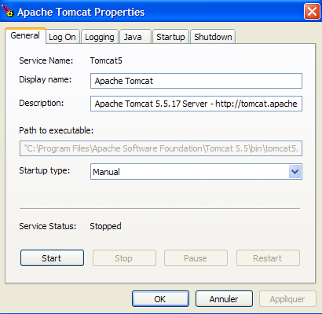
Les boutons [Start - Stop - Pause] - Restart nous permettent de lancer - arrêter - relancer le serveur. Nous lançons le serveur par [Start] puis, avec un navigateur nous demandons l'url http://localhost:8080. Nous devons obtenir une page analogue à la suivante :

On pourra suivre les liens ci-dessous pour vérifier la correcte installation de Tomcat :

Tous les liens de la page [http://localhost:8080] présentent un intérêt et le lecteur est invité à les explorer. Nous aurons l'occasion de revenir sur les liens permettant de gérer les applications web déployées au sein du serveur :

2.3. Déploiement d'une application web au sein du serveur Tomcat
Lectures [ref1] : chapitre 1, chapitre2 : 2.3.1, 2.3.2, 2.3.3
2.3.1. Déploiement
Une application web doit suivre certaines règles pour être déployée au sein d'un conteneur de servlets. Soit <webapp> le dossier d'une application web. Une application web est composée de :
dans le dossier <webapp>\WEB-INF\classes | |
dans le dossier <webapp>\WEB-INF\lib | |
dans le dossier <webapp> ou des sous-dossiers |
L'application web est configurée par un fichier XML : <webapp>\WEB-INF\web.xml.
Construisons l'application web dont l'arborescence est la suivante :

On construira l'arborescence ci-dessus avec l'explorateur windows. Les dossiers [classes] et [lib] sont ici vides. Le dossier [vues] contient un fichier HTML statique :

dont le contenu est le suivant :
<html>
<head>
<title>Application exemple</title>
</head>
<body>
Application exemple active ....
</body>
</html>
Si on charge ce fichier dans un navigateur, on obtient la page suivante :

L'URL affichée par le navigateur montre que la page n'a pas été délivrée par un serveur web mais directement chargée par le navigateur. Nous voulons maintenant qu'elle soit disponible via le serveur web Tomcat.
Revenons sur l'arborescence du répertoire <tomcat> :
La configuration des applications web déployées au sein du serveur Tomcat se fait à l'aide de fichiers XML placés dans le dossier [<tomcat>\conf\Catalina\localhost] :
 |  |
Ces fichiers XML peuvent être créés à la main car leur structure est simple. Plutôt que d'adopter cette démarche, nous allons utiliser les outils web que nous offre Tomcat.
2.3.2. Administration de Tomcat
Sur sa page d'entrée http://localhost:8080, le serveur nous offre des liens pour l'administrer :
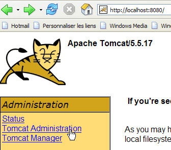
Le lien [Tomcat Administration] nous offre la possibilité de configurer les ressources mises par Tomcat à la disposition des applications web déployées en son sein, par exemple un pool de connexions à une base de données. Suivons le lien :

La page obtenue nous indique que l'administration de Tomcat 5.x nécessite un paquetage particulier appelé " admin ". Retournons sur le site de Tomcat :
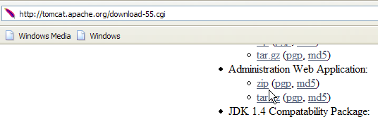
Téléchargeons le zip libellé [Administration Web Application] puis décompressons-le. Son contenu est le suivant :

Le dossier [admin] doit être copié dans [<tomcat>\server\webapps] où <tomcat> est le dossier où a été installé tomcat 5.x :

Le dossier [localhost] contient un fichier [admin.xml] qui doit être copié dans [<tomcat>\conf\Catalina\localhost] :

Arrêtons puis relançons Tomcat s'il était actif. Puis avec un navigateur, redemandons la page d'entrée du serveur web :

Suivons le lien [Tomcat Administration]. Nous obtenons une page d'identification :
Note : en fait, pour obtenir la page ci-dessous, j'ai du d'abord demander manuellement l'url [http://localhost:8080/admin/index.jsp]. Ce n'est qu'ensuite que le lien [Tomcat Administration] ci-dessus a fonctionné. J'ignore s'il s'agit ou non d'une erreur de procédure de ma part.
 |  |
Ici, il faut redonner les informations que nous avons données au cours de l'installation de Tomcat. Dans notre cas, nous donnons le couple admin / admin. Le bouton [Login] nous amène à la page suivante :

Cette page permet à l'administrateur de Tomcat de définir
- des sources de données (Data Sources),
- les informations nécessaires à l'envoi de courrier (Mail Sessions),
- des données d'environnement accessibles à toutes les applications (Environment Entries),
- de gérer les utilisateurs/administrateurs de Tomcat (Users),
- de gérer des groupes d'utilisateurs (Groups),
- de définir des rôles (= ce que peut faire ou non un utilisateur),
- de définir les caractéristiques des applications web déployées par le serveur (Service Catalina)
Suivons le lien [Roles] ci-dessus :

Un rôle permet de définir ce que peut faire ou ne pas faire un utilisateur ou un groupe d'utilisateurs. On associe à un rôle certains droits. Chaque utilisateur est associé à un ou plusieurs rôles et dispose des droits de ceux-ci. Le rôle [manager] ci-dessous donne le droit de gérer les applications web déployées dans Tomcat (déploiement, démarrage, arrêt, déchargement). Nous allons créer un utilisateur [manager] qu'on associera au rôle [manager] afin de lui permettre de gérer les applications de Tomcat. Pour cela, nous suivons le lien [Users] de la page d'administration :

Nous voyons qu'un certain nombre d'utilisateurs existent déjà. Nous utilisons l'option [Create New User] pour créer un nouvel utilisateur :

Nous donnons à l'utilisateur manager le mot de passe manager et nous lui attribuons le rôle manager. Nous utilisons le bouton [Save] pour valider cet ajout. Le nouvel utilisateur apparaît dans la liste des utilisateurs :

Ce nouvel utilisateur va être ajouté dans le fichier [<tomcat>\conf\tomcat-users.xml] :

dont le contenu est le suivant :
- ligne 10 : l'utilisateur [manager] qui a été créé
Une autre façon d'ajouter des utilisateurs est de modifier directement ce fichier. C'est notamment ainsi qu'il faut procéder si, d'aventure, on a oublié le mot de passe de l'administrateur admin ou de manager.
2.3.3. Gestion des applications web déployées
Revenons maintenant à la page d'entrée [http://localhost:8080] et suivons le lien [Tomcat Manager] :

Nous obtenons alors une page d'authentification. Nous nous identifions comme manager / manager, c.a.d. l'utilisateur de rôle [manager] que nous venons de créer. En effet, seul un utilisateur ayant ce rôle peut utiliser ce lien. Ligne 11 de [tomcat-users.xml], nous voyons que l'utilisateur [admin] a également le rôle [manager]. Nous pourrions donc utiliser également l'authentification [admin / admin].

Nous obtenons une page listant les applications actuellement déployées dans Tomcat :

Nous pouvons ajouter une nouvelle application grâce à des formulaires placés en bas de la page :

Ici, nous voulons déployer au sein de Tomcat, l'application exemple que nous avons construite précédemment. Nous le faisons de la façon suivante :
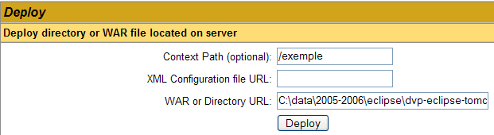
/exemple | le nom utilisé pour désigner l'application web à déployer | |
C:\data\2005-2006\eclipse\dvp-eclipse-tomcat\exemple | le dossier de l'application web |
Pour obtenir le fichier [C:\data\2005-2006\eclipse\dvp-eclipse-tomcat\exemple\vues\exemple.html], nous demanderons à Tomcat l'URL [http://localhost:8080/exemple/vues/exemple.html]. Le contexte sert donc à donner un nom à la racine de l'arborescence de l'application web déployée. Nous utilisons le bouton [Deploy] pour effectuer le déploiement de l'application. Si tout se passe bien, nous obtenons la page réponse suivante :
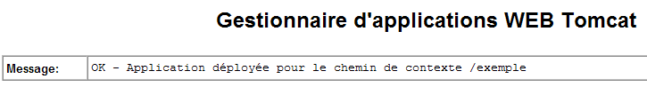
et la nouvelle application apparaît dans la liste des applications déployées :

Commentons la ligne du contexte /exemple ci-dessus :
lien sur http://localhost:8080/exemple | |
permet de démarrer l'application | |
permet d'arrêter l'application | |
permet de recharger l'application. C'est nécessaire par exemple lorsqu'on a ajouté, modifié ou supprimé certaines classes de l'application. | |
suppression du contexte [/exemple]. L'application disparaît de la liste des applications disponibles. |
Maintenant que notre application /exemple est déployée, nous pouvons faire quelques tests. Nous demandons la page [exemple.html] via l'url [http://localhost:8080/exemple/vues/exemple.html] :
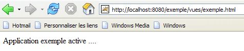
Une autre façon de déployer une application web au sein du serveur Tomcat est de donner les renseignements que nous avons donnés via l'interface web, dans un fichier [contexte].xml placé dans le dossier [<tomcat>\conf\Catalina\localhost], où [contexte] est le nom de l'application web.
Revenons à l'interface d'administration de Tomcat :

Supprimons l'application [/exemple] avec son lien [Undeploy] :

L'application [/exemple] ne fait plus partie de la liste des applications actives. Maintenant définissons le fichier [exemple.xml] suivant :
Le fichier XML est constitué d'une unique balise <Context> dont l'attribut docBase définit le dossier contenant l'application web à déployer. Plaçons ce fichier dans <tomcat>\conf\Catalina\localhost :
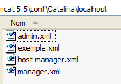
Arrêtons et relançons Tomcat si besoin est, puis visualisons la liste des applications actives avec l'administrateur de Tomcat :

L'application [/exemple] est bien présente. Demandons, avec un navigateur, l'url :
[http://localhost:8080/exemple/vues/exemple.html] :
Une application web ainsi déployée peut être supprimée de la liste des applications déployées, de la même façon que précédemment, avec le lien [Undeploy] :

Dans ce cas, le fichier [exemple.xml] est automatiquement supprimé du dossier [<tomcat>\conf\Catalina\localhost].
Enfin, pour déployer une application web au sein de Tomcat, on peut également définir son contexte dans le fichier [<tomcat>\conf\server.xml]. Nous ne développerons pas ce point ici.
2.3.4. Application web avec page d'accueil
Lorsque nous demandons l'url [http://localhost:8080/exemple/], nous obtenons la réponse suivante :
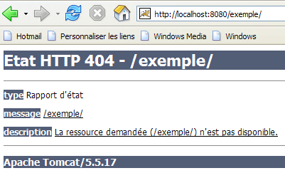
Ce résultat dépend de la configuration de Tomcat. Avec des versions précédentes, nous aurions obtenu le contenu du dossier physique de l'application [/exemple]. C'est une bonne chose que désormais par défaut, Tomcat empêche cet affichage.
On peut faire en sorte que, lorsque le contexte est demandé, on affiche une page dite d'accueil. Pour cela, nous créons un fichier [web.xml] que nous plaçons dans le dossier <exemple>\WEB-INF, où <exemple> est le dossier physique de l'application web [/exemple]. Ce fichier est le suivant :
- lignes 2-5 : la balise racine <web-app> avec des attributs obtenus par copier / coller du fichier [web.xml] de l'application [/admin] de Tomcat (<tomcat>/server/webapps/admin/WEB-INF/web.xml).
- ligne 7 : le nom d'affichage de l'application web. C'est un nom libre qui a moins de contraintes que le nom de contexte de l'application. On peut y mettre des espaces par exemple, ce qui n'est pas possible avec le nom de contexte. Ce nom est affiché par exemple par l'administrateur Tomcat :

- ligne 8 : description de l'application web. Ce texte peut ensuite être obtenu par programmation.
- lignes 9-11 : la liste des fichiers d'accueil. La balise <welcome-file-list> sert à définir la liste des vues à présenter lorsqu'un client demande le contexte de l'application. Il peut y avoir plusieurs vues. La première trouvée est présentée au client. Ici nous n'en avons qu'une : [/vues/exemple.html]. Ainsi, lorsqu'un client demandera l'url [/exemple], ce sera en fait l'url [/exemple/vues/exemple.html] qui lui sera délivrée.
Sauvegardons ce fichier [web.xml] dans <exemple>\WEB-INF :

Si Tomcat est toujours actif, il est possible de le forcer à recharger l'application web [/exemple] avec le lien [Recharger] :

Lors de cette opération de " rechargement ", Tomcat relit le fichier [web.xml] contenu dans [<exemple>\WEB-INF] s'il existe. Ce sera le cas ici. Si Tomcat était arrêté, le relancer.
Avec un navigateur, demandons l'URL [http://localhost:8080/exemple/] :

Le mécanisme des fichiers d'accueil a fonctionné.
2.4. Installation d'Eclipse
Eclipse est un environnement de développement multi-langages. Il est beaucoup utilisé dans le développement Java. C'est un outil extensible par adjonction d'outils appelés plugins. Il existe un grand nombre de plugins et c'est ce qui fait la force d'Eclipse.
Eclipse est disponible à l'url [http://www.eclipse.org/downloads/] :

Nous souhaitons utiliser Eclipse pour faire du développement web en Java. Il existe un certain nombre de plugins pour cela. Ils aident à vérifier la syntaxe des pages JSP, des fichiers XML, ... et permettent de tester une application web à l'intérieur d'Eclipse. Nous utiliserons l'un de ces plugins, appelé Web Tools Package (WTP). La démarche normale d'installation d'Eclipse est normalement la suivante :
- installer Eclipse
- installer les plugins dont on a besoin
Le plugin WTP nécessite lui-même d'autres plugins ce qui fait que son installation est assez complexe. Aussi le site d'Eclipse propose-t-il un paquetage comprenant la plate-forme de développement Eclipse et le plugin WTP avec tous les autres plugins dont celui-ci a besoin. Ce paquetage est disponible sur le site d'Eclipse (mai 2006) à l'url [http://download.eclipse.org/webtools/downloads/] :

Suivons le lien [1.0.2] ci-dessus :
Nous téléchargeons le paquetage [wtp] avec le lien ci-dessus. Le fichier zippé obtenu a le contenu suivant :

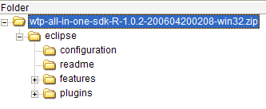
Il suffit de décompresser ce contenu dans un dossier. Nous appellerons désormais ce dossier <eclipse>. Son contenu est le suivant :

[eclipse.exe] est l'exécutable et [eclipse.ini] le fichier de configuration de celui-ci. Regardons le contenu de celui-ci :
Ces arguments sont utilisés lors du lancement d'Eclipse de la façon suivante :
On arrive au même résultat obtenu avec le fichier .ini en créant un raccourci qui lancerait Eclipse avec ces mêmes arguments. Explicitons ceux-ci :
- -vmargs : indique que les arguments qui suivent sont destinés à la machine virtuelle Java qui va exécuter Eclipse. En effet, Eclipse est une application Java.
- -Xms40m : ?
- -Xmx256m : fixe la taille mémoire en Mo allouée à la machine virtuelle Java (JVM) qui exécute Eclipse. Par défaut, cette taille est de 256 Mo comme montré ici. Si la machine le permet, 512 Mo est préférable.
Ces arguments sont passés à la JVM qui va exécuter Eclipse. La JVM est représentée par un fichier [java.exe] ou [javaw.exe]. Comment celui-ci est-il trouvé ? En fait, il est cherché de différentes façons :
- dans le PATH de l'OS
- dans le dossier <JAVA_HOME>/jre/bin où JAVA_HOME est une variable système définissant le dossier racine d'un JDK.
- à un emplacement passé en argument à Eclipse sous la forme -vm <chemin>\javaw.exe
Cette dernière solution est préférable car les deux autres sont sujettes aux aléas des installations ultérieures d'applications qui peuvent soit changer le PATH de l'OS, soit changer la variable JAVA_HOME.
Nous créons donc le raccourci suivant :

<eclipse>\eclipse.exe -vm "C:\Program Files\Java\jre1.5.0_06\bin\javaw.exe" -vmargs -Xms40m -Xmx512m | |
dossier <eclipse> d'installation d'Eclipse |
Ceci fait, lançons Eclipse via ce raccourci. On obtient une première boîte de dialogue :

Un [workspace] est un espace de travail. Acceptons les valeurs par défaut proposées. Par défaut, les projets Eclipse créés le seront dans le dossier <workspace> spécifié dans cette boîte de dialogue. Il y a moyen de contourner ce comportement. C'est ce que nous ferons systématiquement. Aussi la réponse donnée à cette boîte de dialogue n'est-elle pas importante.
Passée cette étape, l'environnement de développement Eclipse est affiché :

Nous fermons la vue [Welcome] comme suggéré ci-dessus :
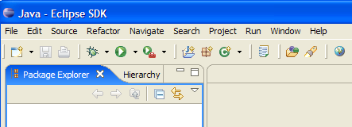
Avant de créer un projet Java, nous allons configurer Eclipse pour indiquer le JDK à utiliser pour compiler les projets Java. Pour cela, nous prenons l'option [Window / Preferences / Java / Installed JREs ] :

Normalement, le JRE (Java Runtime Environment) qui a été utilisé pour lancer Eclipse lui-même doit être présent dans la liste des JRE. Ce sera le seul normalement. Il est possible d'ajouter des JRE avec le bouton [Add]. Il faut alors désigner la racine du JRE. Le bouton [Search] va lui, lancer une recherche de JREs sur le disque. C'est un bon moyen de savoir où on en est dans les JREs qu'on installe puis qu'on oublie de désinstaller lorsqu'on passe à une version plus récente. Ci-dessus, le JRE coché est celui qui sera utilisé pour compiler et exécuter les projets Java.
Le JRE qui sera utilisé dans nos exemples est celui qui a été installé au paragraphe 2.1 et qui a également servi à lancer Eclipse. Un double clic dessus donne accès à ses propriétés :

Maintenant, créons un projet Java [File / New / Project] :
 |  |
Choisir [Java Project], puis [Next] ->

Dans [2], nous indiquons un dossier vide dans lequel sera installé le projet Java. Dans [1], nous donnons un nom au projet. Il n'a pas à porter le nom de son dossier comme pourrait le laisser croire l'exemple ci-dessus. Ceci fait, on utilise le bouton [Finish] pour terminer l'assistant de création. Cela revient à accepter les valeurs par défaut proposées par les pages suivantes de l'assistant.
Nous avons alors un squelette de projet Java :
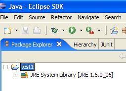
Cliquons droit sur le projet [test1] pour créer une classe Java :
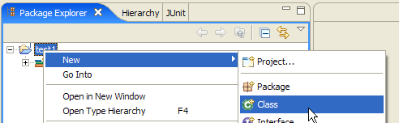

- dans [1], le dossier où sera créée la classe. Eclipse propose par défaut le dossier du projet courant.
- dans [2], le paquetage dans lequel sera placée la classe
- dans [3], le nom de la classe
- dans [4], nous demandons à ce que la méthode statique [main] soit générée
Nous validons l'assistant par [Finish]. Le projet est alors enrichi d'une classe :

Eclipse a généré le squelette de la classe. Celui-ci est obtenu en double-cliquant sur [Test1.java] ci-dessus :

Nous modifions le code ci-dessus de la façon suivante :

Nous exécutons le programme [Test1.java] : [clic droit sur Test1.java -> Run As -> Java Application]
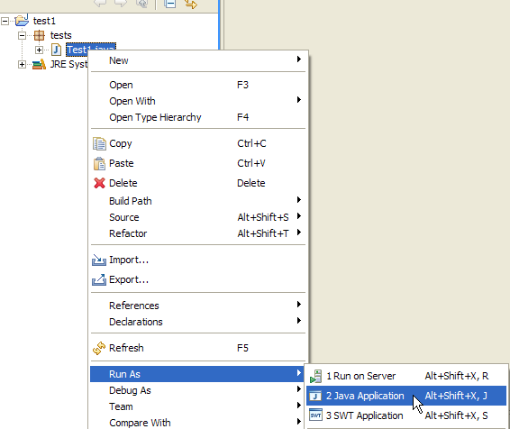
Le résultat de l'exécution est obtenu dans la fenêtre [Console] :

2.5. Intégration Tomcat - Eclipse
Afin de travailler avec Tomcat tout en restant au sein d'Eclipse, il nous faut déclarer ce serveur dans la configuration d'Eclipse. Pour cela, nous prenons l'option [File / New / Other]. Nous obtenons alors l'assistant suivant :

Nous choisissons de créer un nouveau serveur. Nous sélectionnons l'icône [Server] ci-dessus puis faisons [Next] :
L'ajout du serveur se concrétise par celui d'un dossier dans l'explorateur de projets d'Eclipse :
Pour gérer Tomcat depuis Eclipse, nous faisons apparaître la vue appelée [Servers] avec l'option [Window -> Show View -> Other -> Server] :


Faire [OK]. La vue [Servers] apparaît alors :

Apparaîssent dans cette vue, tous les serveurs déclarés, ici le serveur Tomcat 5.5 que nous venons d'enregistrer. Un clic droit dessus donne accès aux commandes permettant de démarrer – arrêter – relancer le serveur :

Ci-dessus, nous lançons le serveur. Lors de son démarrage, un certain nombre de logs sont écrits dans la vue [Console] :
La compréhension de ces logs demande une certaine habitude. Nous ne nous apesantirons pas dessus pour le moment. Il est cependant important de vérifier qu'ils ne signalent pas d'erreurs de chargement de contextes. En effet, lorsqu'il est lancé, le serveur Tomcat / Eclipse va chercher à charger le contexte des applications qu'il gère. Charger le contexte d'une application implique d'exploiter son fichier [web.xml] et de charger une ou plusieurs classes l'initialisant. Plusieurs types d'erreurs peuvent alors se produire :
- le fichier [web.xml] est syntaxiquement incorrect. C'est l'erreur la plus fréquente. Il est conseillé d'utiliser un outil capable de vérifier la validité d'un document XML lors de sa construction.
- certaines classes à charger n'ont pas été trouvées. Elles sont cherchées dans [WEB-INF/classes] et [WEB-INF/lib]. Il faut en général vérifier la présence des classes nécessaires et l'orthographe de celles déclarées dans le fichier [web.xml].
Le serveur lancé à partir d'Eclipse n'a pas la même configuration que celui installé au paragraphe 2.2, page 5. Pour nous en assurer, demandons l'url [http://localhost:8080] avec un navigateur :

Cette réponse n'indique pas que le serveur ne fonctionne pas mais que la ressource / qui lui est demandée n'est pas disponible. Avec le serveur Tomcat intégré à Eclipse, ces ressources vont être des projets web. Nous le verrons ultérieurement. Pour le moment, arrêtons Tomcat :

Le mode de fonctionnement précédent peut être changé. Revenons dans la vue [Servers] et double-cliquons sur le serveur Tomcat pour avoir accès à ses propriétés :
 |  |
La case à cocher [1] est responsable du fonctionnement précédent. Lorsqu'elle est cochée, les applications web développées sous Eclipse ne sont pas déclarées dans les fichiers de configuration du serveur Tomcat associé mais dans des fichiers de configuration séparés. Ce faisant, on ne dispose pas des applications définies par défaut au sein du serveur Tomcat : [admin] et [manager] qui sont deux applications utiles. Aussi, allons-nous décocher [1] et relancer Tomcat :
 |  |
Ceci fait, demandons l'url [http://localhost:8080] avec un navigateur :

Nous retrouvons le fonctionnement décrit au paragraphe 2.3.3, page 15.
Nous avons, dans nos exemples précédents, utilisé un navigateur extérieur à Eclipse. On peut également utiliser un navigateur interne à Eclipse :

Nous sélectionnons ci-dessus, le navigateur interne. Pour le lancer à partir d'Eclipse on peut utiliser l'icône suivante :

Le navigateur réellement lancé sera celui sélectionné par l'option [Window -> Web Browser]. Ici, nous obtenons le navigateur interne :

Lançons si besoin est Tomcat à partir d'Eclipse et demandons dans [1] l'url [http://localhost:8080] :
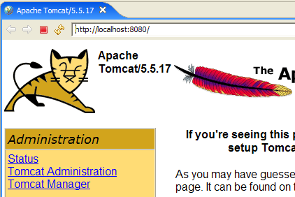
Suivons le lien [Tomcat Manager] :
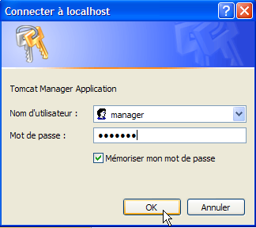
Le couple [login / mot de passe] nécessaire pour accéder à l'application [manager] est demandé. D'après la configuration de Tomcat que nous avons faite précédemment, on peut taper [admin / admin] ou [manager / manager]. On obtient alors la liste des applications déployées :

Nous voyons l'application [personne] que nous avons créée. Le lien [Recharger] associé nous sera utile ultérieurement.